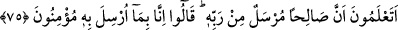

arasındaki Hicr bölgesinde ev ve sığınak yaptı.
“Onun düzlüklerinde saraylar ediniyorsunuz,” Yani ovalarına yüksek kasırlar
yapıyorsunuz veya kolayca topraktan kerpiç ve tuğla kullanarak saraylar yapıyorsunuz.
“dağlarını” sert kayaları “yontup, evler yapıyorsunuz.” Denildiğine göre onlar, yazın
ovalarda, kışın da dağlarda oturuyorlardı. Bir başka izaha göre ise ömürleri uzun
olduğu için dağları yontup evler yapmaya ihtiyaç duyuyorlardı. Çünkü ömürleri
bitmeden tahta ve kerpiçden yapılan evler eriyip gidiyordu.
“Artık Allah’ın nimetlerini hatırlayın da” Yani, Allah’ın size verdiği nimetleri
muhâfaza edin. Allah Teâlâ’nın nimetlerinin hakkı ise şükretmek ve onlardan gâfil olup
unutmamaktır
“yeryüzünde bozgunculuk yapıp karışıklık çıkarmayın.” “
”, fesadın ileri
derecesidir. Onlara şöyle denilmiştir: “Fesadçılar olarak fesadda ileri gitmeyin.” Bu
durumda maksad, fesad üzere olduklarını onlara bildirmektir. Yoksa bunun mefhûm-i
muhâlifi olan “Islah ediciler olarak fesadda ileri gidin.” mânâsı, asla caiz değildir.
Başka bir görüşe göre ayette “müfsidîn” kelimesinin getirilmesinin sebebi şudur: “
”, aslında mutlak olarak haddi aşmak mânâsına gelir. Çoğunlukla “fesad”
(bozgunculuk) anlamında kullanılsa da bazen “fesad” mânâsının dışında da kullanılır.
Nitekim zâlim olmayanın mukabili, fiilinde haddi aşan zâlimdir. Bazen yapılan iş zulüm
gibi gözükse de onda büyük bir iyilik olabilir. Hızır (a.s.)’ın çocuğu öldürmesi ve
gemiyi delmesi buna örnek verilebilir.
75. Kavminin ileri gelenlerinden büyüklük taslayanlar, içlerinden zayıf görülen
inananlara dediler ki: Siz Salih’in, Rabbi tarafından gönderildiğini biliyor musunuz?
Onlar da Şüphesiz biz onunla ne gönderilmişse ona inananlarız, dediler.
“Kavminin ileri gelenlerinden büyüklük taslayanlar” Sâlih (a.s.)’a ve ona indirilene
inanmaya kibirlenip tenezzül etmeyen kavminin eşraf ve reisleri “içlerinden zayıf
görülen inananlara:” zayıf ve zelil gördükleri mü’minlere; “Siz Sâlih’in gerçekten
Rabb’i tarafından gönderildiğini biliyor musunuz?” dediler.” Bunu, alay etmek için
söylüyorlardı.
Zayıf mü’minler: “Doğrusu, biz onunla gönderilene” tevhîde ve ibâdet esaslarına
“inananlarız.” dediler.”
Mü’minler, büyüklük taslayan ileri gelenlerin sorularına “Evet” veya “O’nun, Rabb’i
tarafından gönderildiğini biliyoruz.” diyerek uygun bir cevap vermemişlerdir. Bunu,
Sâlih (a.s.)’ın peygamber olarak gönderilmesinin kendileri tarafından çok iyi bilinen bir